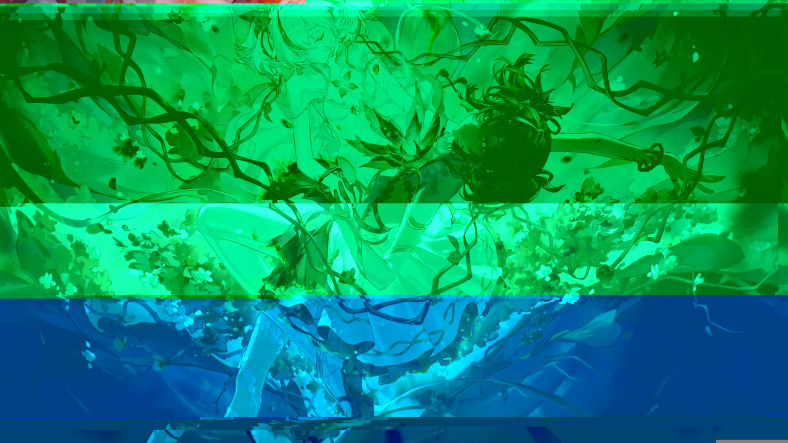
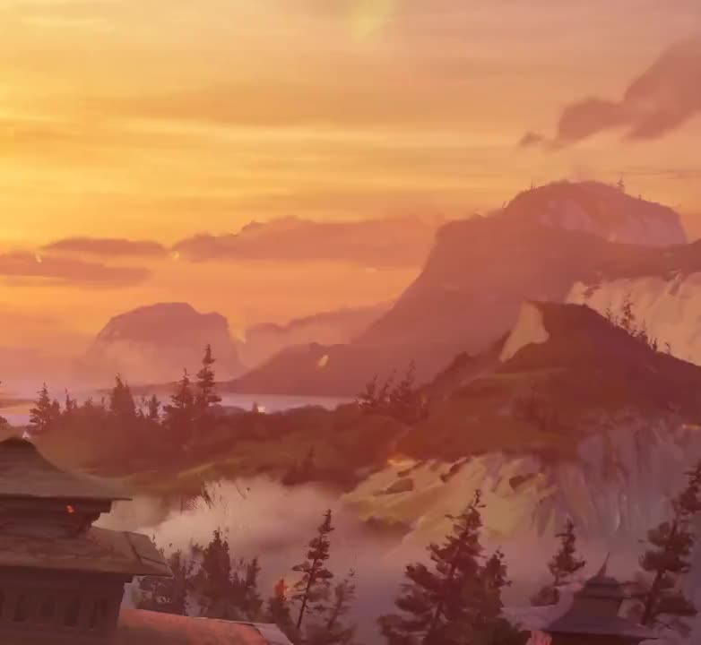

ART 74 · New Media / 2026
Experiment,
remix, repeat.
ART 74 introduced me to new ways of making: manipulating images, remixing familiar media, editing through time, and designing stories with code. Each piece challenges how an image or an interaction can carry meaning.
Four experiments
ART 74 projects.

Glitch: Breaking the Image
Digital errors and color shifts become part of the visual language.

Midnight Terror
Characters from different worlds form a new humorous horror scene.

Classic
A video experiment that brings Resident Evil and Valorant into dialogue.

Draw a Rose
A drawing that unfolds one hyperlink at a time.